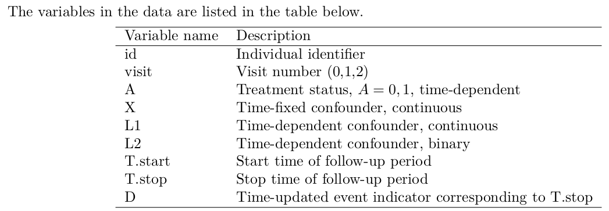
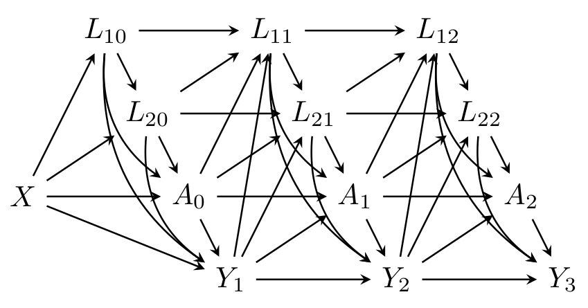
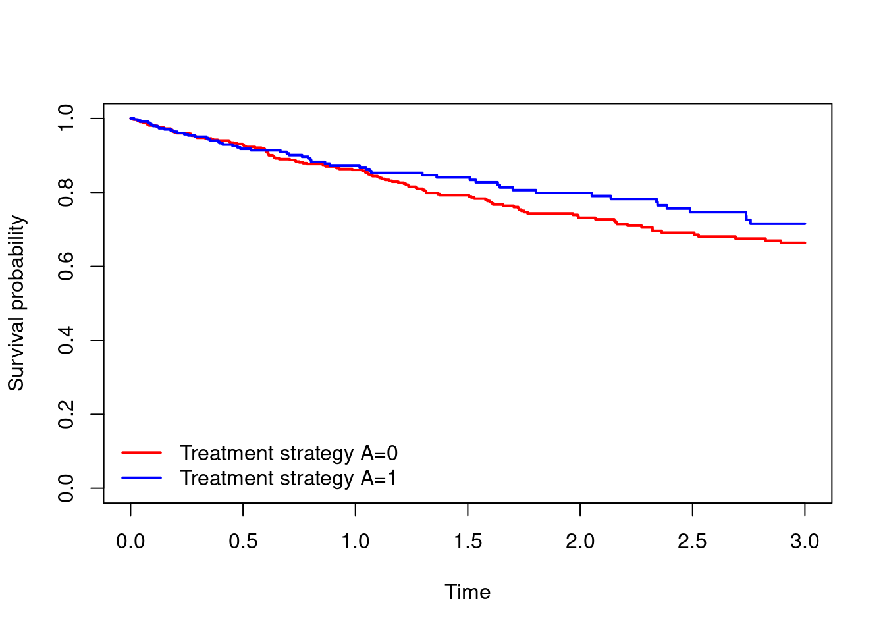
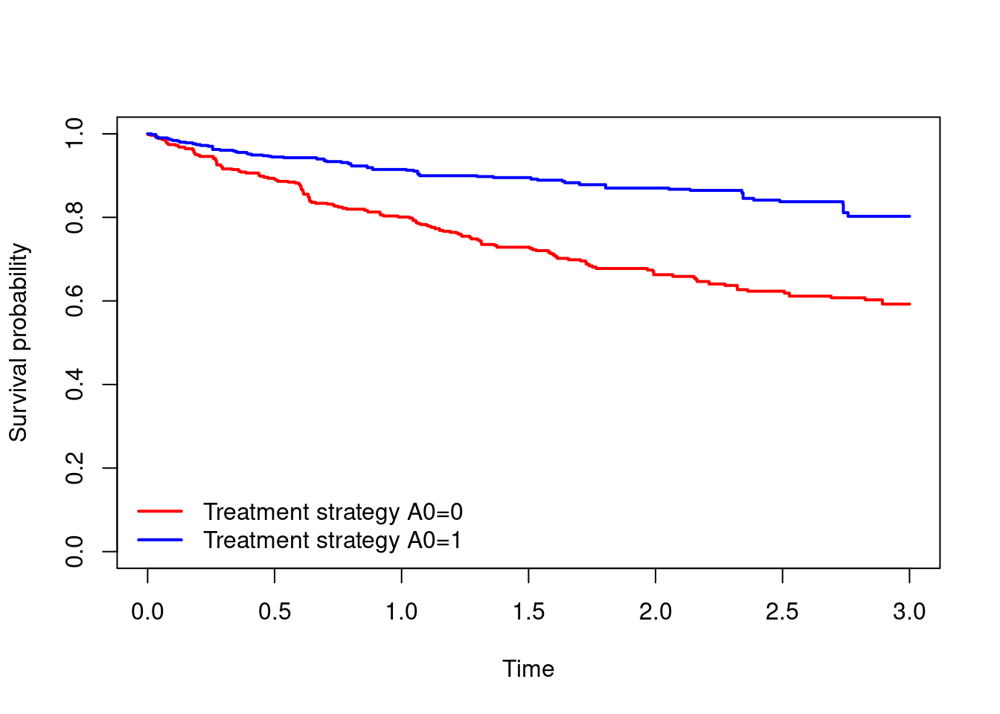
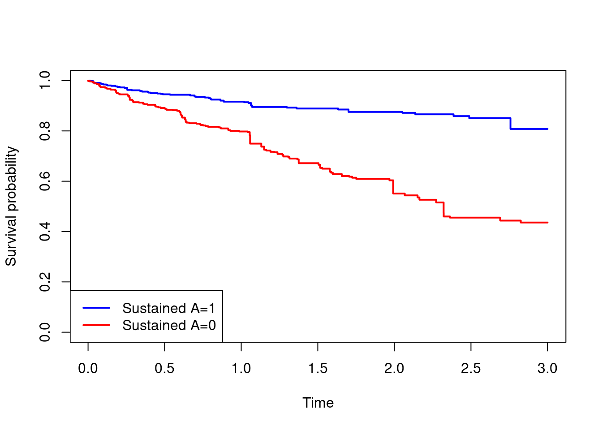
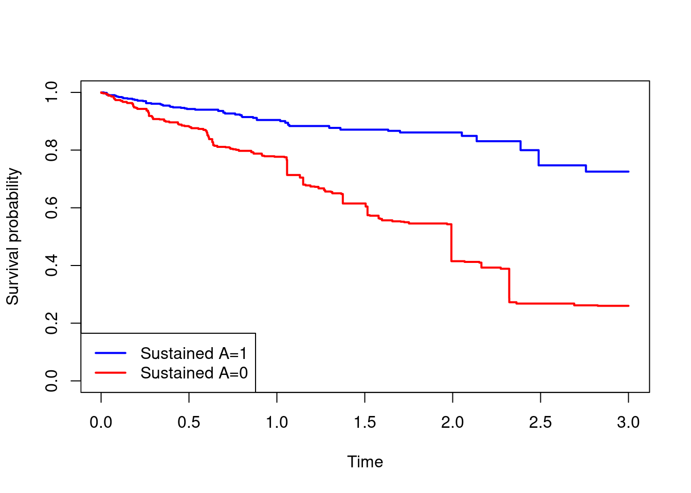

library(survival)
library(tidyverse)
library(splines)
dta = readRDS(file = "data/dta_long.rds")Censoring and time-dependent treatment strategies
Data
In this practical we will use a simulated data set, which includes data on 1000 individuals. The data include information on time-dependent treatment status \(A\), alongside three confounding variables (\(X,L_1,L_2\)), two of which are time-dependent. Individuals were followed up for death for up to 3 years.

You can assume the relationships between the variables is as depicted in the discrete time DAG below, where \(Y_t\) denotes the event indicator \(D\) at time \(t\) (\(t=1,2,3\)).

Aims
This practical exercise is in two parts.
In Part A the aim is to estimate the effect of treatment status at time 0 (\(A_0\)) on survival up to 3 years. This part ignores that treatment status changes over time, and it can be considered as a type of intention-to-treat (ITT) analysis. In this part we will also explore how to handle dependent censoring using inverse probability of censoring weights (IPCW).
In Part B the aim is to estimate the effect of sustained use of the treatment vs sustained non-use of the treatment on survival up to 3 years. We will use the cloning-censoring-weighting approach to estimate the population average (marginal) survival curves if everyone had received treatment \(A\) from time 0 onwards (\(a_0=a_1=a_2=1\)) and if everyone had not received treatment \(A\) from time 0 onwards (\(a_0=a_1=a_2=0\)).
Load data and packages
In this practical we will use the following packages: survival, tidyverse, splines.
Impact of baseline treatment status and using IPCW
- Check out the format of the data. How many rows of data are there? How many events?
#data for the first 5 individuals
dta[dta$id%in%1:5,] id visit T.start T.stop D A X L1 L2
1.0 1 0 0 0.1158240 0 0 -0.06264538 -0.82276938 1
2.0 2 0 0 1.0000000 0 0 0.01836433 -1.79637025 0
2.1 2 1 1 2.0000000 0 0 0.01836433 -0.44665445 1
2.2 2 2 2 2.6234834 0 1 0.01836433 -0.34086086 1
3.0 3 0 0 1.0000000 0 1 -0.08356286 1.46577269 1
3.1 3 1 1 2.0000000 0 1 -0.08356286 1.48940024 1
3.2 3 2 2 3.0000000 0 0 -0.08356286 -1.13274309 0
4.0 4 0 0 0.4539474 0 1 0.15952808 0.66796553 1
5.0 5 0 0 0.4846428 0 0 0.03295078 -0.02254975 1dim(dta)[1] 1827 9table(dta$D)
0 1
1640 187 - Generate the baseline values of \(A,L_1,L_2\) (i.e. the values at time 0) so that the baseline values are stored in each row of data for a given individual. We will refer to these as \(A_0, L_{10}, L_{20}\).
dta$A0 = ave(dta$A, dta$id, FUN=function(x){x[1]})
dta$L10 = ave(dta$L1, dta$id, FUN=function(x){x[1]})
dta$L20 = ave(dta$L2, dta$id, FUN=function(x){x[1]})
head(dta) id visit T.start T.stop D A X L1 L2 A0 L10 L20
1.0 1 0 0 0.115824 0 0 -0.06264538 -0.8227694 1 0 -0.8227694 1
2.0 2 0 0 1.000000 0 0 0.01836433 -1.7963702 0 0 -1.7963702 0
2.1 2 1 1 2.000000 0 0 0.01836433 -0.4466544 1 0 -1.7963702 0
2.2 2 2 2 2.623483 0 1 0.01836433 -0.3408609 1 0 -1.7963702 0
3.0 3 0 0 1.000000 0 1 -0.08356286 1.4657727 1 1 1.4657727 1
3.1 3 1 1 2.000000 0 1 -0.08356286 1.4894002 1 1 1.4657727 1- Perform an unweighted (i.e. unadjusted) Kaplan-Meier analysis by treatment status at baseline, \(A_0\), and plot the estimated survival curves. Here we need to take account of the long format of the data using
Surv(T.start,T.stop,D)insurvfit. What is the crude association between \(A_0\) and survival? Obtain the estimated survival probabilities at time 3.
km.unwt = survfit(Surv(T.start,T.stop,D)~A0,data=dta)
plot(km.unwt, xlab="Time",ylab="Survival probability",
col=c("red","blue"),lwd=2,conf.int=F,main="")
legend(x="bottomleft",c("Treatment strategy A=0","Treatment strategy A=1"),
col=c("red","blue"),lty=1,lwd=2,bty="n")
#survival probabilities at time 3
summary(km.unwt,times=3)Call: survfit(formula = Surv(T.start, T.stop, D) ~ A0, data = dta)
A0=0
time n.risk n.event survival std.err lower 95% CI
3.0000 112.0000 131.0000 0.6638 0.0268 0.6133
upper 95% CI
0.7184
A0=1
time n.risk n.event survival std.err lower 95% CI
3.0000 60.0000 56.0000 0.7153 0.0365 0.6472
upper 95% CI
0.7905 - In this question we will estimate marginal survival curves under the strategies of setting \(A_0=1\) for everyone and setting \(A_0=0\) for everyone, denoted \(S^{a_0=1}(t)=\mathbb{P}(T^{a_0=1}>t)\) and \(S^{a_0=0}(t)=\mathbb{P}(T^{a_0=0}>t)\).
- Using a logistic regression model, generate inverse probability of treatment weights of the form \[ iptw=\frac{A_0}{\mathbb{P}(A_{0}=1|X,L_{10},L_{20})}+\frac{(1-A_0)}{\mathbb{P}(A_{0}=0|X,L_{10},L_{20})} \] The model used to generate the weights should be fitted using only the first row of data for each individual.
- Perform a weighted Kaplan-Meier analysis by treatment status at baseline (\(A_0\)) using the weights generated in (a).
- Plot and interpret the estimated survival curves under the two treatment strategies. Obtain estimates of \(S^{a_0=1}(t)\) and \(S^{a_0=0}(t)\) for \(t=3\).
#Fit the model for treatment at baseline
mod.treat = glm(A0~X+L10+L20,
data=dta[dta$T.start==0,],family="binomial")
#predicted probability of treatment from the model for each individual
pred.treat = predict(mod.treat,newdata=dta,type="response")
#Obtain the weight for each person
dta$iptw = (dta$A0==1)/pred.treat+(dta$A0==0)/(1-pred.treat)
#Weighted Kaplan-Meier
km.wt = survfit(Surv(T.start,T.stop,D)~A0,data=dta,weights = dta$iptw)
plot(km.wt, xlab="Time",ylab="Survival probability",
col=c("red","blue"),lwd=2,conf.int=F,main="")
legend(x="bottomleft",c("Treatment strategy A0=0","Treatment strategy A0=1"),
col=c("red","blue"),lty=1,lwd=2,bty="n")
#survival probabilities at time 3
summary(km.wt,times=3)Call: survfit(formula = Surv(T.start, T.stop, D) ~ A0, data = dta,
weights = dta$iptw)
A0=0
time n.risk n.event censored survival std.err
3.00e+00 1.48e+02 2.50e+02 1.50e+03 5.93e-01 3.07e-02
lower 95% CI upper 95% CI
5.35e-01 6.56e-01
A0=1
time n.risk n.event censored survival std.err
3.00e+00 2.63e+02 1.26e+02 1.92e+03 8.03e-01 3.42e-02
lower 95% CI upper 95% CI
7.38e-01 8.72e-01 - The analysis in question 3 assumes that any censoring in the data is independent of any variables that are also related to the outcome. It turns out that the censoring depends on \(X\) and \(L_2\), which are also related to the outcome (we know this because we generated the data!). In this question we will account for dependent censoring using inverse probability of censoring weights (IPCW) to estimate \(S^{a_0=1,\bar{c}_t=0}(t)=\mathbb{P}(T^{a_0=1,\bar{c}_t=0}>t)\) and \(S^{a_0=0,\bar{c}_t=0}(t)=\mathbb{P}(T^{a_0=0,\bar{c}_t=0}>t)\).
- Generate an indicator for non-administrative censoring in each row for each individual. This should indicate whether the individual is (non-administratively) censored at time
T.stop. - Fit a logistic regression model with your censoring indicator as the outcome and with \(A, X,L_1,L_2\) as covariates. Include visit as a factor variable.
- Use the model in (b) to estimate the inverse probability of censoring weight in each row: \[ ipcw(t)=\prod_{k=1}^{t}\frac{1}{\mathbb{P}(C_k=0|\bar C_{k-1}=0,\bar{A}_k,X,\bar{L}_{1k},\bar{L}_{2k})}, \quad t=1,2,3 \]
- Generate a combined weight by multiplying the IPTW by the IPCW, and perform a weighted Kaplan-Meier analysis by treatment status at baseline (\(A_0\)).
- Plot and interpret the estimated survival curves under the two treatment strategies. Obtain estimates of \(S^{a_0=1,\bar{c}_t=0}(t)\) and \(S^{a_0=1,\bar{c}_t=0}(t)\) for \(t=3\).
# Create event variable for censoring
dta$censored = ave(dta$D, dta$id, FUN = function(x){
ifelse(cumsum(x)==rep(0, length(x)), c(rep(0, length(x)-1), 1), rep(0, length(x)))})
dta$censored = ifelse(dta$T.stop==3 & dta$D==0,0,dta$censored)
# Fit pooled logistic regressions with censoring as outcome:
cwfit.denum = glm(censored ~ as.factor(T.start) + A + X + L1 + L2,
family=binomial, data=dta)
# Predict individual censoring probabilities over time:
cprob.denum = predict(cwfit.denum, dta, type="response")
# Calculate IPCW's:
dta$ipcw = 1/(1-cprob.denum)
dta$ipcw = ave(dta$ipcw, dta$id, FUN = cumprod)
#combined weights
dta$comb.wt = pmin(dta$ipcw*dta$iptw,50)
dta$comb.wt = pmin(dta$ipcw*dta$iptw,50)
#Weighted Kaplan-Meier
km.wt2 = survfit(Surv(T.start,T.stop,D)~A0,data=dta,weights = dta$comb.wt)
plot(km.wt2, xlab="Time",ylab="Survival probability",
col=c("red","blue"),lwd=2,conf.int=F,main="")
legend(x="bottomleft",c("Treatment strategy A0=0","Treatment strategy A0=1"),
col=c("red","blue"),lty=1,lwd=2,bty="n")
#survival probabilities at time 3
summary(km.wt2,times=3)Call: survfit(formula = Surv(T.start, T.stop, D) ~ A0, data = dta,
weights = dta$comb.wt)
A0=0
time n.risk n.event censored survival std.err
3.00e+00 4.82e+02 6.31e+02 3.57e+03 5.13e-01 4.39e-02
lower 95% CI upper 95% CI
4.34e-01 6.07e-01
A0=1
time n.risk n.event censored survival std.err
3.00e+00 5.66e+02 3.39e+02 4.35e+03 7.38e-01 4.55e-02
lower 95% CI upper 95% CI
6.54e-01 8.32e-01 - EXTRA. The analysis in question 4 assumes that censoring only occurs at time 1, 2, or 3. The censoring times can actually be at any time (in this data set). One approach to allowing for this is to extend the analysis in 4 to allow censoring times to occur on a small grid of times, say \(0.1,0.2,\ldots,2.9,3.0\). To allow this the first step is to divide each individual’s follow-up into smaller time periods according to the grid \(0.1,0.2,\ldots,2.9,3.0\), which can be done using the
survSplitfunction:dta.split = survSplit(Surv(T.start,T.stop,D)~.,data=dta,cut=seq(0,3,0.1)). The rest of the analysis then follows as above, except that in the censoring weights model we recommend including a spline term forT.startinstead of the separate indicator for each time (e.g.ns(T.start,df=4)).
dta.split = survSplit(Surv(T.start,T.stop,D)~.,data=dta,cut=seq(0,3,0.1))
# Create new event variable for censoring
dta.split$censored = ave(dta.split$D, dta.split$id, FUN = function(x){
ifelse(cumsum(x)==rep(0, length(x)), c(rep(0, length(x)-1), 1), rep(0, length(x)))})
dta.split$censored = ifelse(dta.split$T.stop==3 & dta.split$D==0,0,dta.split$censored)
# Fit pooled logistic regressions with censoring as outcome
cwfit.denum = glm(censored ~ splines::ns(T.start,df=4) + A + X + L1 + L2,
family=binomial, data=dta.split)
# Predict individual censoring probabilities over time:
cprob.denum = predict(cwfit.denum, dta.split, type="response")
# Calculate IPCW's
dta.split$ipcw = 1/(1-cprob.denum)
dta.split$ipcw = ave(dta.split$ipcw, dta.split$id, FUN = cumprod)
#combined weights
dta.split$comb.wt = dta.split$ipcw*dta.split$iptw
#Weighted Kaplan-Meier
km.wt3 = survfit(Surv(T.start,T.stop,D)~A0,data=dta.split,weights = dta.split$comb.wt)
plot(km.wt3, xlab="Time",ylab="Survival probability",
col=c("red","blue"),lwd=2,conf.int=F,main="")
legend(x="bottomleft",c("Treatment strategy A0=0","Treatment strategy A0=1"),
col=c("red","blue"),lty=1,lwd=2,bty="n")
#survival probabilities at time 3
summary(km.wt3,times=3)Call: survfit(formula = Surv(T.start, T.stop, D) ~ A0, data = dta.split,
weights = dta.split$comb.wt)
A0=0
time n.risk n.event censored survival std.err
3.00e+00 6.25e+02 5.55e+02 2.30e+04 4.82e-01 5.80e-02
lower 95% CI upper 95% CI
3.80e-01 6.10e-01
A0=1
time n.risk n.event censored survival std.err
3.00e+00 6.40e+02 2.83e+02 2.75e+04 7.27e-01 4.90e-02
lower 95% CI upper 95% CI
6.37e-01 8.30e-01 Sustained treatment strategies and the cloning-censoring-weighting approach
The aim in this part is to estimate survival curves if everyone had received treatment \(A\) from time 0 onwards (\(a_0=a_1=a_2=1\)) and if everyone had not received treatment \(A\) from time 0 onwards (\(a_0=a_1=a_2=0\)). The estimands are denoted \(S^{\underline{a}_0=1}(t)=\mathbb{P}(T^{\underline{a}_0=1}>t)\) and \(S^{\underline{a}_0=0}(t)=\mathbb{P}(T^{\underline{a}_0=0}>t)\). The questions below take us through the steps required to perform the cloning-censoring-weighting analysis.
- In this first question we will perform the cloning step and generate some variables needed for subsequent data manipulation and analysis.
- Create two copies of the data, one corresponding to each of the two treatment strategies of interest. Denote these
clone.1(for strategy \(a_0=a_1=a_2=1\)) andclone.0(for strategy \(a_0=a_1=a_2=0\)). - In the
clone.1data generate a new variable indicating whether a person has deviated from the strategy \(a_0=a_1=a_2=1\). Note that some individuals deviate from this strategy immediately because they have \(A_0=0\) in their first row. Keep all rows of data up to and including the deviation row in which the person first deviates from the strategy \(a_0=a_1=a_2=1\), and discard rows after that in which the person has first deviated. Later we will drop the deviation row, but we need to keep it for now in order to estimate the artificial censoring weights (question 2!). - Repeat (b) for the
clone.0data, thinking now of the strategy \(a_0=a_1=a_2=0\).
#Create two copies of the data
clone.1 = dta
clone.0 = dta
#---
#For clone.1
#cumulative sum of treatment status being A=1
clone.1$cumsumA = ave(clone.1$A==1,clone.1$id,FUN=cumsum)
#indicator of whether the person has deviated from A=1
clone.1$switchA = ifelse(clone.1$cumsumA==clone.1$T.start+1,0,1)
#cumulative indicator of whether the person has deviated from A=1
clone.1$switchA = ave(clone.1$switchA,clone.1$id,FUN=cumsum)
#drop if switchA>1
#because we are only going to use the rows where switchA=0 or 1 to estimate the weights.
clone.1 = clone.1[clone.1$switchA<=1,]
#---
#For clone.0
#cumulative sum of treatment status being A=0
clone.0$cumsumA = ave(clone.0$A==0,clone.0$id,FUN=cumsum)
#indicator of whether the person has deviated from A=0
clone.0$switchA = ifelse(clone.0$cumsumA==clone.0$T.start+1,0,1)
#cumulative indicator of whether the person has deviated from A=0
clone.0$switchA = ave(clone.0$switchA,clone.0$id,FUN=cumsum)
#drop if cumsum.switchA>1
#because we are only going to use the rows where switchA=0 or 1 to estimate the weights.
clone.0 = clone.0[clone.0$switchA<=1,]- In question 1 we have generated a variable
switchAwhich isswitchA=0in rows in which the individual is following the treatment strategy of interest, and which isswitchA=1in the first row in which the person has deviated from the strategy (rows after this have been excluded). Next we will use this variable to estimate the artificial censoring weights. Consider first the data setclone.1and use the following steps:
- Fit a logistic regression model with
switchAas the outcome and with covariates the variables \(X,L_{2},L_{1}\) from the same row, plus an indicator forT.start. This model can be fitted using all rows combined. - Drop the rows in which
switchA=1. we are now finished with this variable. - Use the model in (a) to obtain the artificial censoring weights. The weight in a given row is the probability that a person remains uncensored (i.e. that they have not switched from the treatment strategy of interest): \[ W(t)=\prod_{k=0}^{t}\frac{1}{\mathbb{P}(switchA_k=0|X,L_{2k},L_{1k})},\quad t=0,1,2 \]
- Repeat steps (a)-(c) for the data set
clone.0.
#weights models
wt.mod.denom.1=glm(switchA~as.factor(T.start)+X+L1+L2,family="binomial",data=clone.1)
clone.1$wt.denom = 1-predict(wt.mod.denom.1,type = "response",newdata = clone.1)
wt.mod.denom.0=glm(switchA~as.factor(T.start)+X+L1+L2,family="binomial",data=clone.0)
clone.0$wt.denom = 1-predict(wt.mod.denom.0,type = "response",newdata = clone.0)
#drop the row where the switch occurred
clone.1 = clone.1[clone.1$switchA==0,]
clone.0 = clone.0[clone.0$switchA==0,]
#ipcw for the artificial censoring
clone.1$wt = 1/clone.1$wt.denom
clone.1$wt = ave(clone.1$wt,clone.1$id,FUN=cumprod)
clone.0$wt = 1/clone.0$wt.denom
clone.0$wt = ave(clone.0$wt,clone.0$id,FUN=cumprod)- Finally, we perform the weighting step of the cloning-censoring-weighting approach, by performing a weighted analysis using the weights generated in question 2.
- Using the data set
clone.1perform a weighted Kaplan-Meier analysis to estimate \[S^{\underline{a}_0=1}(t)=\mathbb{P}(T^{\underline{a}_0=1}>t)\] - Using the data set
clone.0perform a weighted Kaplan-Meier analysis to estimate \[S^{\underline{a}_0=0}(t)=\mathbb{P}(T^{\underline{a}_0=0}>t)\] - Compare the estimated survival curves in a plot and interpret the results.
- Obtain the estimated survival probability at time 3 under each treatment strategy, and the corresponding risk difference
km.1 = survfit(Surv(T.start,T.stop,D)~1,data=clone.1,weights = clone.1$wt)
km.0 = survfit(Surv(T.start,T.stop,D)~1,data=clone.0,weights = clone.0$wt)
plot(km.1$time,km.1$surv,type="s",col="blue",lwd=2,
xlab="Time",ylab="Survival probability",ylim=c(0,1))
lines(km.0$time,km.0$surv,type="s",col="red",lwd=2)
legend("bottomleft",c("Sustained A=1","Sustained A=0"),col=c("blue","red"),lwd=2)
#survival probabilities and risk difference at time 3
summary(km.1,times=3)$surv[1] 0.8078718summary(km.0,times=3)$surv[1] 0.4359687(1-summary(km.1,times=3)$surv)-(1-summary(km.0,times=3)$surv)[1] -0.3719031- EXTRA. The above cloning-censoring-weighting analysis does not account for any standard censoring that may depend on covariates. This can be done by combining the censoring weights estimated in Part A, with the cloning-censoring-weighting approach performed in Part B. We recommend estimating the standard censoring weights first.
#Demonstrated here by starting from dta.split,
# which contains the ipcw for standard censoring.
#Create two copies of the data
clone.1 = dta.split
clone.0 = dta.split
#---
#For clone.1
#cumulative sum of treatment status being A=1
clone.1$cumsumA = ave(clone.1$A==1,clone.1$id,FUN=cumsum)
#indicator of whether the person has deviated from A=1
clone.1$rownum=ave(rep(1,dim(clone.1)[1]),clone.1$id,FUN=cumsum)
clone.1$switchA = ifelse(clone.1$cumsumA==clone.1$rownum,0,1)
#cumulative indicator of whether the person has deviated from A=1
clone.1$switchA = ave(clone.1$switchA,clone.1$id,FUN=cumsum)
#drop if switchA>1
#because we are only going to use the rows where switchA=0 or 1 to estimate the weights.
clone.1 = clone.1[clone.1$switchA<=1,]
#---
#For clone.0
#cumulative sum of treatment status being A=0
clone.0$cumsumA = ave(clone.0$A==0,clone.0$id,FUN=cumsum)
#indicator of whether the person has deviated from A=0
clone.0$rownum=ave(rep(1,dim(clone.0)[1]),clone.0$id,FUN=cumsum)
clone.0$switchA = ifelse(clone.0$cumsumA==clone.0$rownum,0,1)
#cumulative indicator of whether the person has deviated from A=0
clone.0$switchA = ave(clone.0$switchA,clone.0$id,FUN=cumsum)
#drop if cumsum.switchA>1
#because we are only going to use the rows where switchA=0 or 1 to estimate the weights.
clone.0 = clone.0[clone.0$switchA<=1,]
#weights models
wt.mod.denom.1=glm(switchA~as.factor(visit)+X+L1+L2,family="binomial",
data=clone.1[clone.1$T.start%in%c(0,1,2),])
clone.1$wt.denom = 1-predict(wt.mod.denom.1,type = "response",newdata = clone.1)
wt.mod.denom.0=glm(switchA~as.factor(visit)+X+L1+L2,family="binomial",
data=clone.0[clone.0$T.start%in%c(0,1,2),])
clone.0$wt.denom = 1-predict(wt.mod.denom.0,type = "response",newdata = clone.0)
#drop the row where the switch occurred
clone.1 = clone.1[clone.1$switchA==0,]
clone.0 = clone.0[clone.0$switchA==0,]
#ipcw for the artificial censoring
clone.1$wt = ifelse(clone.1$T.start%in%c(0,1,2),1/clone.1$wt.denom,1)
clone.1$wt = ave(clone.1$wt,clone.1$id,FUN=cumprod)
clone.0$wt = ifelse(clone.0$T.start%in%c(0,1,2),1/clone.0$wt.denom,1)
clone.0$wt = ave(clone.0$wt,clone.0$id,FUN=cumprod)
#combine the artificial censoring weight with the standard censoring weight
clone.1$comb.wt = clone.1$wt*clone.1$ipcw
clone.0$comb.wt = clone.0$wt*clone.0$ipcw
#weighted Kaplan-Meier analyses
#Note that if we use wt instead of comb.wt then the results are
# identical to those in question 4, as they should be
km.1 = survfit(Surv(T.start,T.stop,D)~1,data=clone.1,weights = clone.1$comb.wt)
km.0 = survfit(Surv(T.start,T.stop,D)~1,data=clone.0,weights = clone.0$comb.wt)
plot(km.1$time,km.1$surv,type="s",col="blue",lwd=2,
xlab="Time",ylab="Survival probability",ylim=c(0,1))
lines(km.0$time,km.0$surv,type="s",col="red",lwd=2)
legend("bottomleft",c("Sustained A=1","Sustained A=0"),col=c("blue","red"),lwd=2)
#survival probabilities and risk difference at time 3
summary(km.1,times=3)$surv[1] 0.7254016summary(km.0,times=3)$surv[1] 0.2601855(1-summary(km.1,times=3)$surv)-(1-summary(km.0,times=3)$surv)[1] -0.4652161